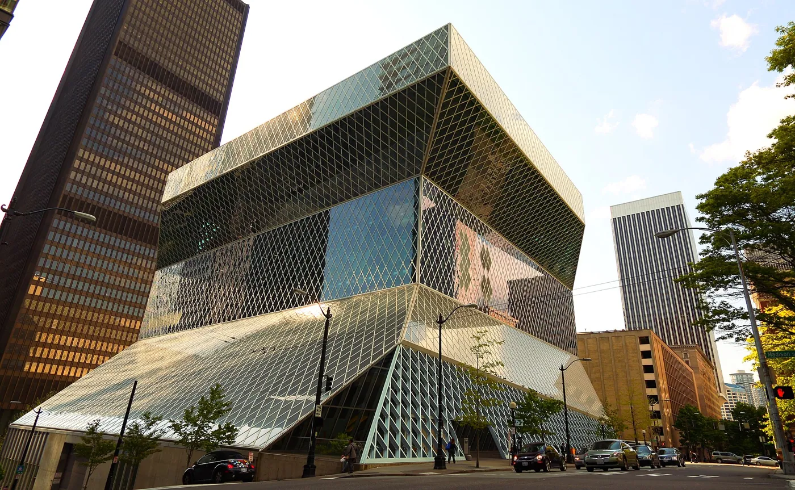
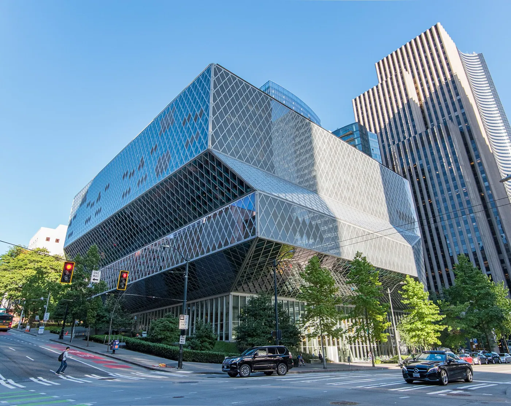
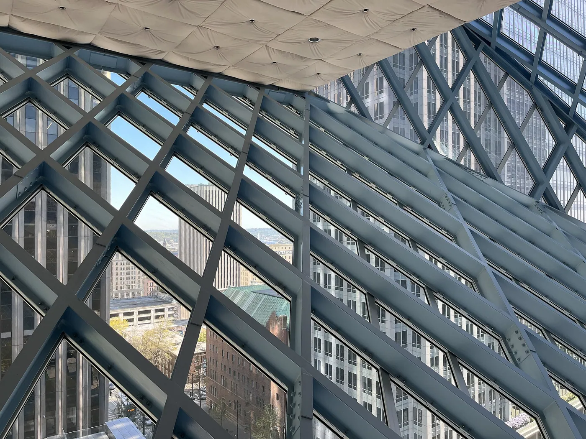
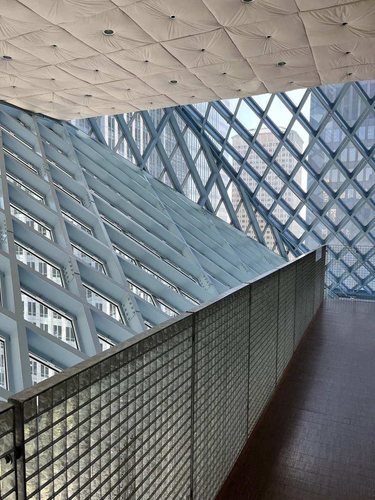
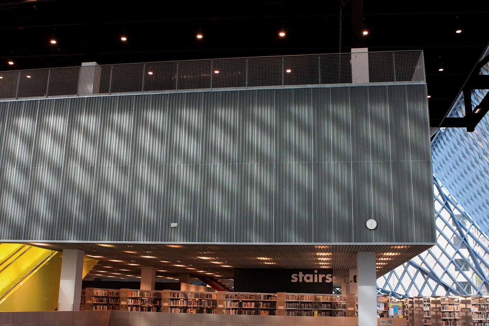
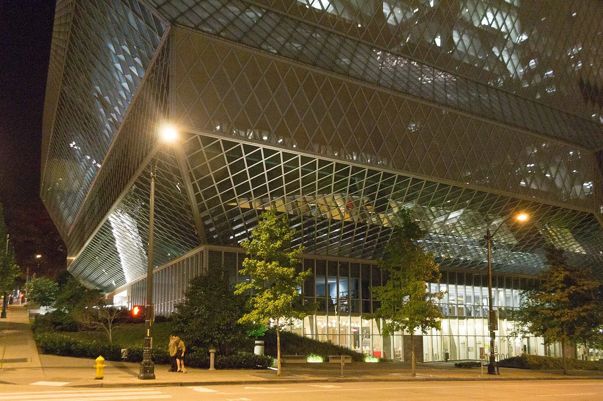
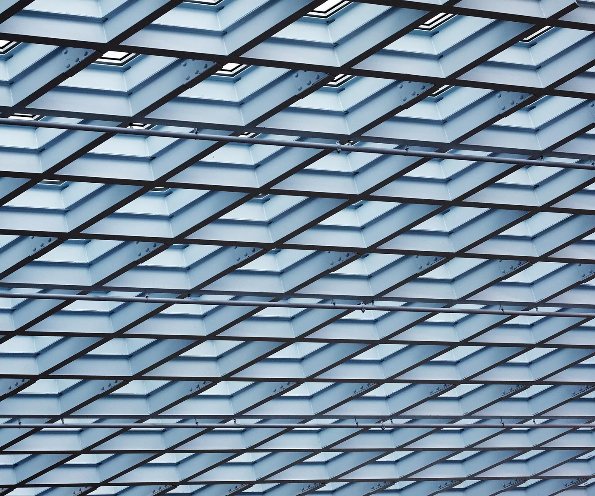

1/8 · Exterior · Main Seattle libraryPhoto: Ɱ · CC BY-SA 4.0 · source
2/8 · Exterior · Seattle Central Library looking west from 5th Ave and Madison StPhoto: Andrew Smith from Seattle, WA, USA · CC BY-SA 2.0 · source
3/8 · ExteriorPhoto: SounderBruce · CC BY-SA 4.0 · source
4/8 · InteriorPhoto: Ɱ · CC BY-SA 4.0 · source
5/8 · InteriorPhoto: Ɱ · CC BY-SA 4.0 · source
6/8 · InteriorPhoto: Ɱ · CC BY-SA 4.0 · source
7/8 · Detail · Seattle Public Library-Central Library, Seattle, United StatesPhoto: Chance Anderson chanceanderson · CC0 · source
8/8 · Context · A view of the Seattle Central Library at nightPhoto: Visitor7 · CC BY-SA 3.0 · source Culture & sport · Contemporary
Seattle Central Library
OMA · Seattle, United States · 2004
Key featuresPlatforms stacked and shifted inside a diamond-mesh skin; the book spiral is one continuous ramp.
- Architect
- OMA
- Place
- Seattle, United States
- Year
- 2004
- Typology
- Culture & sport
- Movement
- Contemporary
- Region
- Americas
See it on the wall


.jpg){kind=link}


.jpg){kind=link}